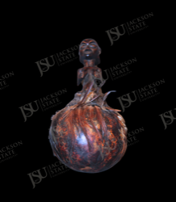

African Art Record
Gourd or Container with Figural Stopper
Unidentified East or Central African peoples
This gourd-form object or container combines a polished mottled globular vessel body with a small carved anthropomorphic figure attached at the top. Figural gourd and calabash containers occur in several East and Central African ceremonial, therapeutic, and personal-object traditions. The contrast between smooth vessel and carved figure gives the object a distinctive sculptural character.
Collection Context
Catalog framing
This record is published as part of the Jackson State University African Art Collection and remains distinct from the Department of Art permanent collection browse path.
Low: object form is visible and supports a broad East/Central African container comparison, but cultural attribution and function are not securely identifiable.
Object Description
Interpretive description
This gourd-form object or container combines a polished mottled globular vessel body with a small carved anthropomorphic figure attached at the top. Figural gourd and calabash containers occur in several East and Central African ceremonial, therapeutic, and personal-object traditions. The contrast between smooth vessel and carved figure gives the object a distinctive sculptural character.